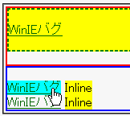

2003-05-14再作成。
以下の条件群のいずれかに該当するとき、アンカーにマウスポインタ等を乗せて:hover状態にすると内側から3番目のボックスの高さが増加したり減少したりする。
<style type="text/css">
a:hover {
background: aqua;
}
</style>
<div style="width:50%; border:2px solid red;">
<div style="background:yellow; border:2px dashed green;">
<div style="margin:1em 0;">
<a href="../winie.html">WinIEバグ</a>
</div></div></div>
<div style="width:50%; border:2px solid blue;">
<div style="margin:1em 0;">
<div><a href="../winie.html">WinIEバグ</a>
<span style="background:yellow;">Inline</span></div>
<div><a href="../winie.html">WinIEバグ</a>
<span style="background:yellow;">Inline</span></div>
</div></div>
2つの例を置いています。前者は条件群1の例、後者は条件群2の例です。アンカーをポイントして動作を確かめてください。
※マウスポインタを載せた後のスクリーンショットです。なお、マウスポインタを載せる前のWinIE6.0での表示はN7.02のスクリーンショットと同じ状態でした。
N7.02での表示（標準モード）
WinIE6.0での表示（標準モード）
バグの回避法がいくつか分かっています。
<div style="width:50%; border:2px solid red;"> <div style="background:yellow; border:2px dashed green;"> <div style="margin:1em 0;"> <a href="../winie.html">WinIEバグ</a> <div>ブロック要素</div> </div></div></div>
<div style="width:50%; border:2px solid red;"> <div style="margin:1em 0; background:yellow; border:2px dashed green;"> <div style="margin:1em 0;"> <a href="../winie.html">WinIEバグ</a> </div></div></div>
ただし、場合によっては別のバグ（WinIEバグ103）が発生するので注意してください。
WinIE5.5、WinIE6.0標準モード、WinIE6.0互換モードで不具合の発生が確認されました。